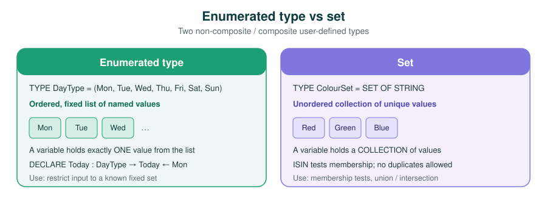
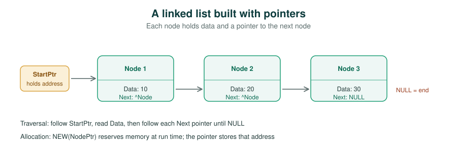
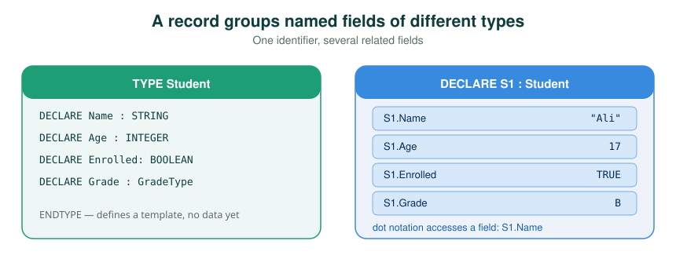

What are user-defined data types?
- A user-defined data type is a custom data structure created by the programmer to match the specific needs of a program
- It is built using Primitive data Types such as
INTEGER,STRING,BOOLEAN, etc - It helps represent real-world entities more accurately than built-in types alone
- It is built using Primitive data Types such as
- A non-composite data type is defined without referencing any other data type in its definition; it can be a primitive type supplied by the language or a user-defined type (enumerated or pointer)
- A composite data type references other data types in its definition, grouping a collection of related data items (of the same or different types) under a single identifier; it can be a record, set or class/object
| Type | Description |
|---|---|
| Non-composite | Made up of a single data item (e.g. enumerated types like Day = (Mon, Tue, ...)) |
| Composite | Made up of multiple data items, often of different types (e.g. records/structures) |
Why user-defined data types are necessary ★
- Type safety / validity — a variable of a user-defined type can only hold a valid value from that type, so an invalid assignment such as
Today ← Fundayis rejected instead of silently storing a meaningless value - Modelling reality — built-in types store a single primitive value, so related data and the allowed values must be grouped into one named type before a real-world entity can be represented faithfully
- Types not available in the language — the programmer may need a data type that does not exist in the language, or may wish to extend the flexibility of the language by building a new type from existing ones
- Maintainability and reuse — a type is defined once and reused wherever it is needed, so a change to its definition is made in a single place
- Self-documenting code — a meaningful type name such as
PupilTypeorGradestates the programmer’s intent, so the code is easier to understand / read without extra comments - Exact fit — the result is a data type that exactly matches the program’s requirements (a particular group of data under a single identifier)
User-defined data types may be created by programmers when writing software.
Explain the reasons why user-defined data types are needed.
Answer
Q1(a) — One mark per mark point (Max 3)
- MP1 The programmer may require a data type for their application that doesn’t exist within the programming language
- MP2 … to represent a particular set/group of data / custom data structure
- MP3 … under a single identifier
- MP4 They may wish to extend those data types that are already there using composite data types
- MP5 … to make the code easier to understand / read
- MP6 To produce a data type that exactly matches a program’s requirements.
Describe the purpose of a user-defined data type.
Answer
Q2(a) — One mark for each correct marking point (Max 2)
- To create a new data type (from existing data types)
- To allow data types not available in a programming language to be constructed // To extend the flexibility of the programming language
Non-composite
What is an enumerated data type?
- An enumerated data type is a type of non-composite, user-defined data type that consists of a list of named, fixed values
- It allows the programmer to define a variable that can only take one of a limited set of values
- Using an enumerated type makes code clearer, more readable and easier to validate
- An enumerated data type should be used:
- When a variable should only hold predefined values
- To improve code readability and reduce errors
- To restrict input to a known, fixed list
- The values in an enumerated declaration have these characteristics (tested repeatedly): the list is ordered / ordinal, it contains all possible values (is complete / of fixed length), it has no duplicate values, and all values are the same data type
- The values need not be names — an enumerated type may hold numeric values, e.g.
TYPE Prime = (2, 3, 5, 7, 11, 13, 17, 19)orTYPE Fibonacci = (0, 1, 2, 3, 5, 8, 13, 21). Exam papers sometimes describe these as a “set of numbers”, but the mark scheme still expects the enumerated( ... )declaration, notSET OFPseudocode
TYPE <identifier> = (value1, value2, value3, … )
Example code
TYPE DayType = (Monday, Tuesday, Wednesday, Thursday, Friday, Saturday, Sunday)
DECLARE Today : DayType
Today ← Monday
IF Today = Saturday OR Today = Sunday THEN
OUTPUT "It's the weekend!"
ELSE
OUTPUT "It's a weekday."
ENDIF
DayTypeis the enumerated typeTodaycan only be one of the seven values listed inDayType- This makes it easy to check against valid options and avoids invalid assignments
An enumerated type restricts a variable to a fixed, ordered list, whereas a set is an unordered collection of unique values:

A user-defined data type is required to store the types of animals in a children’s zoo:
(a) Write the pseudocode statement to declare a non-composite data type, Animals, that holds this data: Alpaca, Chicken, Donkey, Duck, Goat, Pony, Sheep [2]
(b)(i) State the type of user-defined non-composite data type created in 1(a). [1] (b)(ii) Give two features that would apply to any list used in the data type in 1(a). [2]
Answer
Q1(a) — One mark per mark point (Max 2)
- MP1
TYPE Animals = - MP2
(Alpaca, Chicken, Donkey, Duck, Goat, Pony, Sheep)
Example answer: TYPE Animals = (Alpaca, Chicken, Donkey, Duck, Goat, Pony, Sheep)
Guidance: Only allow equals sign. Do not allow quotation marks around data elements. The order of the elements must be correct. Do not allow extra punctuation, such as underscore, between elements, or when going onto the next line.
Q1(b)(i) — Enumerated.
Q1(b)(ii) — One mark per mark point (Max 2)
- MP1 The list is complete / contains all possible values // Cannot change values of list after it is defined/declared // The list is of fixed length
- MP2 The list is ordinal / ordered / in alphabetical order
- MP3 Elements are unique / not repeated
Guidance: Do not allow chronological order for MP2.
(a)(i) An enumerated data type, Spectrum, is required to hold the names of colours. Write the pseudocode statement for the type declaration of Spectrum to hold the names of the colours available: Red, Orange, Yellow, Green, Blue, Indigo, Violet. [2]
(a)(ii) Identify two characteristics of the list of values given in an enumerated data type declaration. [2]
Answer
Q1(a)(i) — One mark per mark point (Max 2)
- MP1
TYPE Spectrum = - MP2
(Red, Orange, Yellow, Green, Blue, Indigo, Violet)
Example answer: TYPE Spectrum = (Red, Orange, Yellow, Green, Blue, Indigo, Violet)
Q1(a)(ii) — One mark per mark point (Max 2)
- the list is ordered/ordinal
- the list contains all possible values
- no duplicate values in list
- all values are the same data type
(a) State what is meant by the term enumerated data type. [1]
© Write the pseudocode statement to define the data type Quarter1, to hold the names of the first three months of a year. [2]
Answer
Q3(a) — A (user-defined non-composite) data type with an ordered list of possible values.
Q3© — TYPE Quarter1 = (January, February, March)
TYPE Quarter1 =[1](January, February, March)[1]
What is a pointer data type?
- A pointer is a special type of variable that stores the memory address of another variable or data item, rather than the data itself
- A pointer type is used to reference a memory location, and it also indicates the type of data stored in that memory location
- Pointers are used to implement dynamic data structures, such as linked lists
TYPE <identifier> = ^<data type>
- The
^indicates the data type is a pointer <data type>indicates the type of data stored in the memory location Example code
TYPE Node
DECLARE Data : INTEGER
DECLARE Next : ^Node
ENDTYPE
DECLARE StartPtr : ^Node
DECLARE NewNode : ^Node
// Create a new node
NEW(NewNode)
NewNode^.Data ← 10
NewNode^.Next ← NULL
// Initialise the list
StartPtr ← NewNode
| Line | What It Does |
|---|---|
TYPE Node |
Defines a new record type called Node |
DECLARE Next : ^Node |
Declares a pointer to another Node, used to link to the next item |
NEW(NewNode) |
Allocates memory for a new node and assigns the pointer to NewNode |
NewNode^. |
Accesses the contents of the memory the pointer is pointing to |
NULL |
A special value used to indicate the end of a linked list (no further nodes) |
- In an answer, giving only “points to” / “a pointer” as the purpose is not accepted — the purpose is to reference a memory location.
A pointer links each node to the next, with the last pointer set to NULL:

(b)(i) A pointer data type is a non-composite user-defined data type. State the purpose of a pointer user-defined data type. [1]
(b)(ii) Write pseudocode to declare a pointer data type called Word to be used with STRING data. [2]
Answer
Q1(b)(i) — A user-defined data type that is used to reference a memory location.
Do not allow point/pointer as the purpose.
Q1(b)(ii) — One mark per mark point (Max 2)
- MP1
TYPE Word - MP2
= ^STRING
Example answer: TYPE Word = ^STRING.
Describe what is meant by pointer data types.
Answer
Q3 — pointer type — One mark per mark point (Max 2)
- MP4: A user-defined non-composite (data type) (only award once)
- MP5: …that stores addresses/memory locations only
- MP6: …and indicates the type of data stored in the memory location.
(b) Write pseudocode to create a pointer type called SelectParts that references the memory location where the current part name is stored.
Answer
Q3(b) — TYPE SelectParts = ^Parts
Use of pointers in dynamic structures
- Linked lists: Each node uses a pointer to link to the next
- Stacks and queues: Implemented using pointers to track top/front positions
- Memory efficiency: Allows storage to be reused and allocated at runtime
Composite
What are records?
- A record is a composite user-defined data type that allows you to group together multiple related fields, each of which can have different data types
- Its definition references other data types to form a single new data type; these may be primitive types from the language or other user-defined types
- A record contains a fixed number of items
- Records are used to represent real-world entities, such as a student, product, or customer, in a single structure
| Feature | Explanation |
|---|---|
| Composite type | Stores multiple values of different types in one structure |
| Custom fields | Each field has a name and a specific data type |
| Access via dot notation | Use the format RecordName.FieldName to access data |
| Reusable | Once defined, the record type can be used to declare multiple variables of that type |
TYPE <RecordTypeName>
DECLARE <FieldName1> : <DataType1>
DECLARE <FieldName2> : <DataType2>
...
ENDTYPE
Example code
TYPE Student
DECLARE Name : STRING
DECLARE Age : INTEGER
DECLARE Enrolled : BOOLEAN
ENDTYPE
DECLARE S1 : Student
S1.Name ← "Ali"
S1.Age ← 17
S1.Enrolled ← TRUE
OUTPUT S1.Name, " is ", S1.Age, " years old."
- Groups related data together for easy access
- Makes programs easier to manage and read
- Ideal for arrays of records (e.g. a list of students)
- A field may itself be a user-defined type: an enumerated type (to restrict its values), a subrange such as
DECLARE NumberOfCopies : 1 .. 10, or an array such asDECLARE AccessionNumber : ARRAY[1:NumberOfCopies] OF INTEGER
A record groups named fields of different types under one identifier:

A program to manage regular flight details at an airport requires some user-defined data types.
(a) Write pseudocode statements to declare the enumerated data type Aircraft to hold: C300, C350, D242, E757, X380. [2]
(b) Write pseudocode statements to declare the composite data type Flight to hold: flight number, destination, date of departure, type of aircraft used. Use the enumerated data type from part (a). [4]
©(i) Write the pseudocode statement to set up a variable for one record of the composite data type Flight. [1]
©(ii) Write pseudocode to store the details of the following flight in the variable from ©(i): XA782, Cambridge, 12/12/2022, C350. [3]
Answer
Q4(a) — TYPE Aircraft = (C300, C350, D242, E757, X380)
TYPE Aircraft =[1](C300, C350, D242, E757, X380)[1]
Q4(b) — One mark for each point (Max 4)
- TYPE Flight and ENDTYPE correct
- DECLARE FlightNumber and DECLARE Destination as STRING
- DECLARE DepartureDate as DATE
- DECLARE AircraftType as Aircraft (correct data type from part 4(a))
Q4©(i) — DECLARE Flight1 : Flight
Q4©(ii) — One mark for each point (Max 3)
- Correct assignments of both string data values
- Correct assignments of date data value
- Correct assignments of enumerated data value
The composite record data type ClubMember is defined in pseudocode with fields: Code, LastName, FirstName, Telephone, JoinDate, Fees, FeesPaid.
(a)(i) Write the pseudocode statement to set up a variable for one record of ClubMember. [1]
(a)(ii) Write the pseudocode statements to assign 984632 to Code and TRUE to FeesPaid. [2]
(b)(i) Write the pseudocode statement for the type declaration of Activity to hold: Badminton, Football, Golf, Snooker, Swimming, Tennis. [2]
(b)(ii) Write the new pseudocode statement required to update the declaration of Choice in the definition of ClubMember. [1]
Answer
Q1(a)(i) — DECLARE Member1 : ClubMember
Q1(a)(ii) — One mark for each correct answer
Member1.Code ← 984632Member1.FeesPaid ← TRUE
Q1(b)(i) — TYPE Activity = (Badminton, Football, Golf, Snooker, Swimming, Tennis)
Q1(b)(ii) — DECLARE Choice : Activity
Describe the user-defined data type record.
Answer
Q3(a) — One mark per mark point (Max 3)
- A user-defined record data type is a composite data type
- It uses other data types in its definition to form a single new data type
- The data types referenced may be primitive data types from a programming language or they may be other user-defined data types
- Includes related items
- Includes a fixed number of items.
What are classes and objects? ★
- A class is a template (blueprint) that defines the attributes (data) and methods (operations) shared by every object of that class; no attribute values exist until an object is created
- An object is an instance of a class, created at run time, and holds its own copy of the attribute values
- Attributes are usually declared
PRIVATEand can only be read or changed through the class’sPUBLICmethods, so the data is protected from invalid values (encapsulation) - Class versus record — a record groups data fields only; a class groups data and the methods that operate on that data, so the behaviour travels with the data
- In the exam, a class/object is most often asked for as one of the “other” composite user-defined data types (alongside a set) rather than as a full class definition
A record data type is a type of composite user-defined data type.
Identify two other types of composite user-defined data types.
Answer
Q1(a) — One mark per correct data type (Max 2)
- set
- class / object
Do not allow record.
What are sets?
- A set is an unordered collection of unique elements
- A set data type is a composite data type that includes the data type it uses as part of its definition; all elements must be of the same data type
- Sets are useful for situations where duplication is not allowed, and where membership testing is common
- Features of a set include:
- No duplicate values
- Order is not important
- Can perform set-theory operations such as union and intersection
TYPE <identifier> = SET OF <data type>
Example code
TYPE ColourSet = SET OF STRING
DEFINE Colours ("Red", "Green", "Blue") : ColourSet
IF "Green" ISIN Colours THEN
OUTPUT "Green is in the set"
ENDIF
- This creates a set named
Colourscontaining"Red","Green", and"Blue"using the user-defined set typeColourSet
(a) Describe the user-defined data type set. [3]
(b) Write pseudocode statements to declare the set data type, SymbolSet, to hold the following set of mathematical operators, using the variable Operators: + – * / ^. [4]
Answer
Q6(a) — One mark per mark point (Max 3)
- MP1 A set user-defined data type is a composite data type
- MP2 … which includes a list of unordered elements
- MP3 Set theory operations, such as intersection and union, can be applied to these elements
- MP4 A set data type includes the type of data/data type it uses as part of its definition
- MP5 All the elements are of the same data type.
Q6(b) — One mark for each mark point (Max 4)
- MP1
TYPE SymbolSet/Operators = - MP2
SET OF CHAR - MP3
DEFINE Operators/SymbolSet - MP4
('+', '–', '*', '/', '^') - MP5
: SymbolSet/Operators
Example answer:
TYPE SymbolSet = SET OF CHAR
DEFINE Operators ('+', '–', '*', '/', '^') : SymbolSet
(a) Explain what is meant by the term non-composite data type and give an example. [3]
(b) Write pseudocode statements to declare the set data type EvenNumbers to hold this set of even numbers between 2 and 12: 2, 4, 6, 8, 10, 12. [4]
Answer
Q3(a) — One mark per mark point (Max 3)
- A data type that is defined without referencing another data type
- It can be a primitive data type found in a programming language or a user-defined data type
- Example – enumerated data type / pointer data type / allow a correct example of an enumerated or pointer data type declaration
Q3(b) — One mark per mark point (Max 4)
- Type statement fully correct
DEFINE EvenNumbers- Correct list of values in brackets
: <set identifier>from Type statement used
Example answer:
TYPE Numbers = SET OF INTEGER
DEFINE EvenNumbers (2, 4, 6, 8, 10, 12): Numbers
- A value from a fixed list → enumerated type (e.g.
TYPE Grade = (A, B, C, D, E)), because any value outside the list is rejected - A link that is created or removed at run time → pointer, because the address can be reassigned while the program runs
- Several related fields describing one entity → record, because the fields are grouped and accessed by name
- An entity that also needs behaviour or protected data → class, because methods and
PRIVATEattributes keep the data consistent - A collection where duplicates are meaningless and membership is tested often → set (e.g. the modules a student has passed), because the same value cannot be stored twice
- Design steps — identify the entity → list its attributes with a type each → decide whether behaviour is needed (class) or data only (record) → check whether any attribute is itself a fixed list (enumerated) or a link (pointer)
- When a question asks for “the most appropriate data type in each case”, choose per field (e.g. an identifier code is
STRING, a count isINTEGER, a date isDATE, a yes/no value isBOOLEAN, a fixed list is an enumerated type) and reuse any enumerated type you defined earlier as a field type
A programmer is writing a program to manage a video library. They require a user-defined data type.
(a) Write pseudocode statements to declare the composite data type VideoLibrary to hold data about each video: identity code, title, year released, date purchased, format, running time. Use the most appropriate data type in each case. [4]
(b) Identify one field in VideoLibrary that could be an efficient enumerated data type and give a reason for your choice. [2]
Answer
Q1(a) — One mark per mark point
- MP1
TYPE VideoLibraryandENDTYPEcorrect - MP2 Declare used correctly for every field in the response
- MP3 All Three STRING fields correct
- MP4 Remaining Three fields correct
Q1(b) — One mark for identification of field and one mark for reason
VideoFormat- This field can have a fixed range of possible values
Two descriptions of user-defined data types are given. Give appropriate type declaration statements for each, including appropriate names.
(a) A data type to hold a set of prime numbers below 20. These prime numbers are: 2, 3, 5, 7, 11, 13, 17, 19. [2] (b) A data type to point to a day in the week, for example Monday. [2]
Answer
Q4(a) — One mark per mark point (Max 2)
Type Prime= (2, 3, 5, 7, 11, 13, 17, 19)
Example answer: TYPE Prime = (2, 3, 5, 7, 11, 13, 17, 19)
Q4(b) — One mark per mark point (Max 2)
TYPE TDayPointer= ^STRING // ^DayOfWeek
Example answer: TYPE TDayPointer = ^STRING // ^DayOfWeek
Exam Question Index
All genuine §13.1 sub-questions, grouped by exam point. Each source is given as YYYY Season PXX QN(sub-part).
| Sub-question | Exam point | Source |
|---|---|---|
| P33 Q1(a) | Need for user-defined data types | 2026 Summer P33 Q1(a) |
| P31 Q2(a) | Need for user-defined data types | 2021 Summer P31 Q2(a) |
| P31 Q1c | Need for user-defined data types / composite concepts | 2022 Summer P31 Q1c |
| P31 Q3(a) | Composite vs non-composite concepts | 2024 Summer P31 Q3(a) |
| Q2 (composite) | Composite vs non-composite concepts | 2023 Winter P32 Q2 (composite) |
| Q2 (non-composite) | Composite vs non-composite concepts | 2023 Winter P32 Q2 (non-composite) |
| P32 Q3(a) | Non-composite — definition | 2024 Summer P32 Q3(a) |
| P32 Q1(a) | Non-composite — enumerated (declaration / choosing) | 2026 Summer P32 Q1(a) |
| P32 Q1(b)(i) | Non-composite — enumerated (identify type) | 2026 Summer P32 Q1(b)(i) |
| P32 Q1(b)(ii) | Non-composite — enumerated (list features) | 2026 Summer P32 Q1(b)(ii) |
| P33 Q1(b) | Non-composite — enumerated (numeric values) | 2026 Summer P33 Q1(b) |
| P31 Q1(a) | Non-composite — enumerated (declaration) | 2025 Summer P31 Q1(a) |
| P32 Q1(b)(i) | Non-composite — enumerated (declaration) | 2025 Summer P32 Q1(b)(i) |
| P32 Q1(b)(ii) | Non-composite — enumerated (field type) | 2025 Summer P32 Q1(b)(ii) |
| P33 Q1(b) | Non-composite — enumerated (choose field + reason) | 2025 Summer P33 Q1(b) |
| P31 Q1(b)(i) | Non-composite — enumerated (declaration) | 2025 Winter P31 Q1(b)(i) |
| P31 Q1(b)(ii) | Non-composite — enumerated (field type) | 2025 Winter P31 Q1(b)(ii) |
| P32 Q1(b)(i) | Non-composite — enumerated (declaration) | 2025 Winter P32 Q1(b)(i) |
| P32 Q1(b)(ii) | Non-composite — enumerated (field type) | 2025 Winter P32 Q1(b)(ii) |
| P33 Q1(a)(i) | Non-composite — enumerated (declaration) | 2025 Winter P33 Q1(a)(i) |
| P33 Q1(a)(ii) | Non-composite — enumerated (list characteristics) | 2025 Winter P33 Q1(a)(ii) |
| Q3 (enumerated) | Non-composite — enumerated (definition) | 2023 Winter P31 Q3 (enumerated) |
| P31 Q4(a) | Non-composite — enumerated / choosing | 2023 Summer P31 Q4(a) |
| P31 Q3(a) | Non-composite — enumerated (definition) | 2022 Winter P31 Q3(a) |
| P31 Q3© | Non-composite — enumerated (declaration) | 2022 Winter P31 Q3© |
| P32 Q4(a) | Non-composite — enumerated (declaration) | 2022 Winter P32 Q4(a) |
| P31 Q2(b)(i) | Non-composite — enumerated (declaration) | 2021 Summer P31 Q2(b)(i) |
| P31 Q2(b)(ii) | Non-composite — enumerated (declaration) | 2021 Summer P31 Q2(b)(ii) |
| P31 Q3(a) | Non-composite — enumerated (declaration) | 2021 Winter P31 Q3(a) |
| P31 Q1(b)(i) | Non-composite — pointer (purpose) | 2026 Summer P31 Q1(b)(i) |
| P31 Q1(b)(ii) | Non-composite — pointer (declaration) | 2026 Summer P31 Q1(b)(ii) |
| Q3 (pointer) | Non-composite — pointer (definition) | 2023 Winter P31 Q3 (pointer) |
| P31 Q4(b) | Non-composite — pointer / choosing | 2023 Summer P31 Q4(b) |
| P31 Q3(b) | Non-composite — pointer (definition) | 2022 Winter P31 Q3(b) |
| P31 Q3(b) | Non-composite — pointer (declaration) | 2021 Winter P31 Q3(b) |
| P31 Q1(a) | Composite — class/object (identify) | 2026 Summer P31 Q1(a) |
| P31 Q1(b) | Composite — record / choosing | 2025 Summer P31 Q1(b) |
| P32 Q1(a) | Composite — record (assign fields) | 2025 Summer P32 Q1(a) |
| P33 Q1(a) | Composite — record / choosing | 2025 Summer P33 Q1(a) |
| P31 Q1(a)(i) | Composite — record (declare variable) | 2025 Winter P31 Q1(a)(i) |
| P31 Q1(a)(ii) | Composite — record (assign fields) | 2025 Winter P31 Q1(a)(ii) |
| P32 Q1(a)(i) | Composite — record (declare variable) | 2025 Winter P32 Q1(a)(i) |
| P32 Q1(a)(ii) | Composite — record (assign fields) | 2025 Winter P32 Q1(a)(ii) |
| P33 Q1(b) | Composite — record / choosing | 2025 Winter P33 Q1(b) |
| P31 Q3(b) | Composite — record (declaration) | 2024 Summer P31 Q3(b) |
| P32 Q3(a) | Composite — record (definition) | 2024 Winter P32 Q3(a) |
| P32 Q3(b) | Composite — record (declaration) | 2024 Winter P32 Q3(b) |
| P32 Q6(a) | Composite — record (declaration) | 2023 Summer P32 Q6(a) |
| P31 Q1a | Composite — record (assign fields) | 2022 Summer P31 Q1a |
| P31 Q1b(i) | Composite — record (subrange field) | 2022 Summer P31 Q1b(i) |
| P31 Q1b(ii) | Composite — record (array field) | 2022 Summer P31 Q1b(ii) |
| P31 Q3(d)(i) | Composite — record (declare variable) | 2022 Winter P31 Q3(d)(i) |
| P31 Q3(d)(ii) | Composite — record (assign fields) | 2022 Winter P31 Q3(d)(ii) |
| P32 Q4(b) | Composite — record (declaration) | 2022 Winter P32 Q4(b) |
| P32 Q4©(i) | Composite — record (declare variable) | 2022 Winter P32 Q4©(i) |
| P32 Q4©(ii) | Composite — record (assign fields) | 2022 Winter P32 Q4©(ii) |
| P31 Q2© | Composite — record (declaration) | 2021 Summer P31 Q2© |
| P32 Q3(b) | Composite — set (declaration) | 2024 Summer P32 Q3(b) |
| P31 Q6(a) | Composite — set (definition) | 2024 Winter P31 Q6(a) |
| P31 Q6(b) | Composite — set (declaration) | 2024 Winter P31 Q6(b) |
Frontmatter-tagged §13.1 but, on reading the body and mark scheme, the content is not §13.1 — listed here for verification, not counted above:
| Sub-question | Actual content | Source |
|---|---|---|
| P33 Q10 | Stack ADT implemented with an array; Base/Top are integer indices, not pointer UDTs |
2025 Winter P33 Q10 |
| P32 Q6(b) | Random-file handling (OPENFILE, SEEK, GETRECORD) — belongs to §13.2 |
2023 Summer P32 Q6(b) |
| P31 Q10 | Recursion and stack ADT (StackFull, AddInteger) — not a user-defined data type |
2021 Winter P31 Q10 |